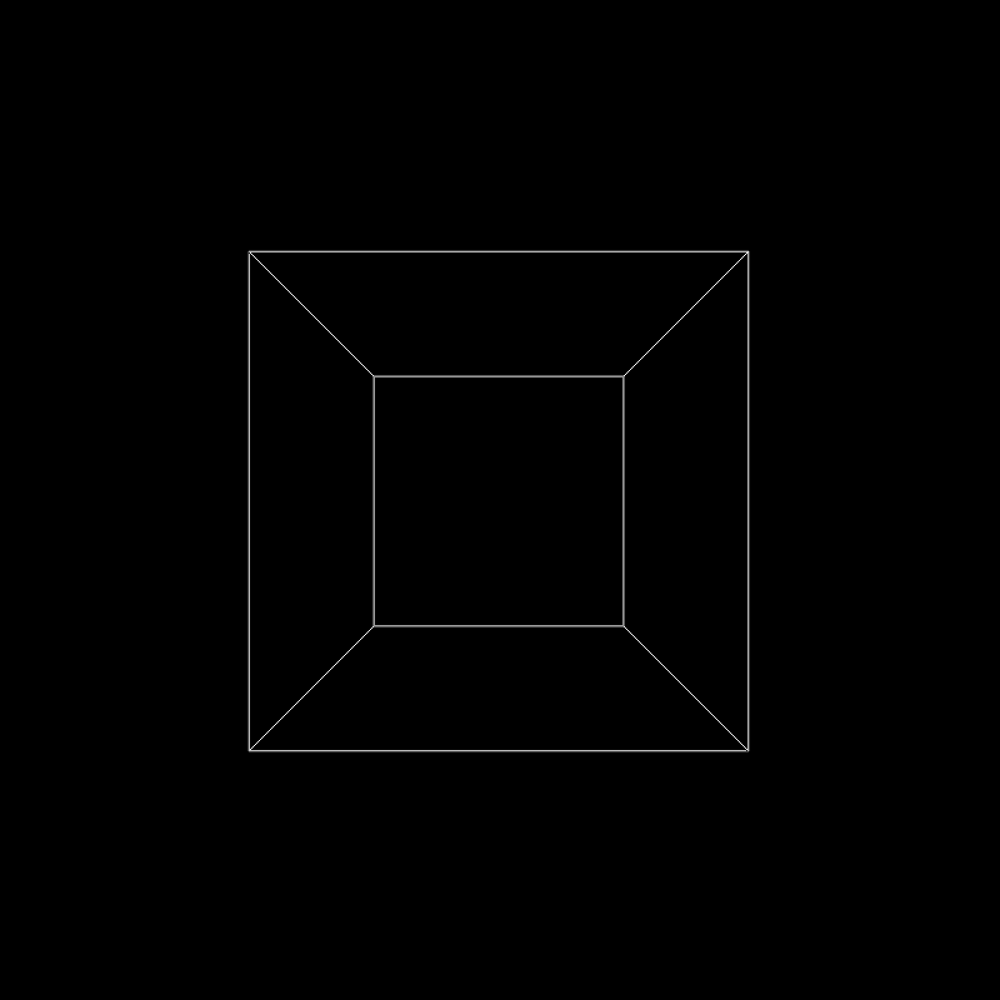
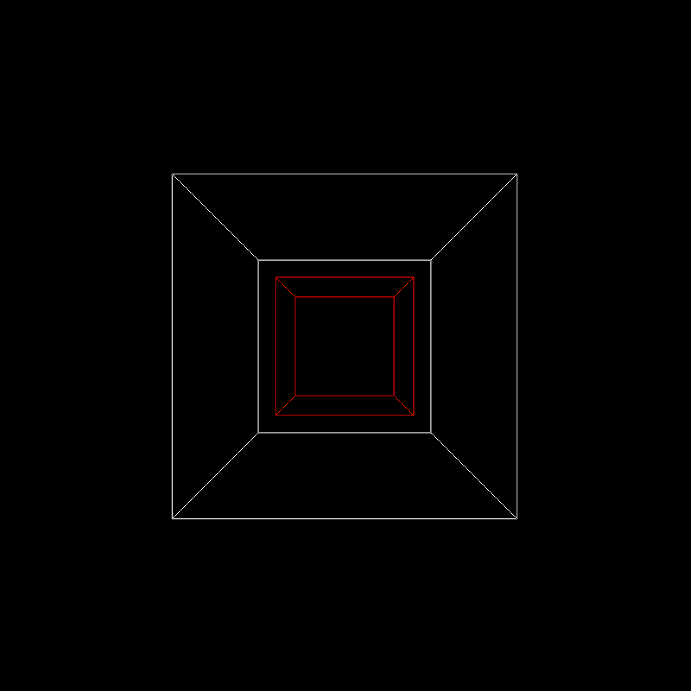
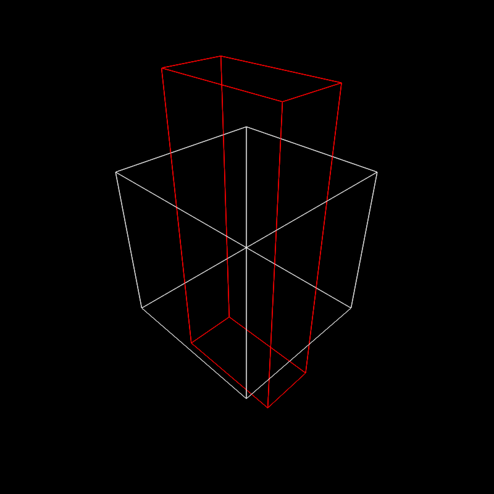

Render a 3D scene made out of lines using a software rasterizer.
rasterize_lines( line_info = NULL, filename = NA, width = 800, height = 800, alpha_line = 1, parallel = TRUE, fov = 20, lookfrom = c(0, 0, 10), lookat = NULL, camera_up = c(0, 1, 0), color = "red", background = "black", debug = "none", near_plane = 0.1, far_plane = 100, block_size = 4, ortho_dimensions = c(1, 1), bloom = FALSE, antialias_lines = TRUE )
| line_info | The mesh object. |
|---|---|
| filename | Default `NULL`. Filename to save the image. If `NULL`, the image will be plotted. |
| width | Default `400`. Width of the rendered image. |
| height | Default `400`. Width of the rendered image. |
| alpha_line | Default `1`. Line transparency. |
| parallel | Default `TRUE`. Whether to use parallel processing. |
| fov | Default `20`. Width of the rendered image. |
| lookfrom | Default `c(0,0,10)`. Camera location. |
| lookat | Default `NULL`. Camera focal position, defaults to the center of the model. |
| camera_up | Default `c(0,1,0)`. Camera up vector. |
| color | Default `darkred`. Color of model if no material file present (or for faces using the default material). |
| background | Default `white`. Background color. |
| debug | Default `"none"`. |
| near_plane | Default `0.1`. |
| far_plane | Default `100`. |
| block_size | Default `4`. |
| ortho_dimensions | Default `c(1,1)`. Width and height of the orthographic camera. Will only be used if `fov = 0`. |
| bloom | Default `FALSE`. Whether to apply bloom to the image. If `TRUE`, this performs a convolution of the HDR image of the scene with a sharp, long-tailed exponential kernel, which does not visibly affect dimly pixels, but does result in emitters light slightly bleeding into adjacent pixels. |
| antialias_lines | Default `TRUE`. Whether to anti-alias lines in the scene. |
Rasterized image.
# \dontshow{ options("cores"=1) # } # \donttest{ #Generate a cube out of lines cube_outline = generate_line(start = c(-1, -1, -1), end = c(-1, -1, 1)) %>% add_lines(generate_line(start = c(-1, -1, -1), end = c(-1, 1, -1))) %>% add_lines(generate_line(start = c(-1, -1, -1), end = c(1, -1, -1))) %>% add_lines(generate_line(start = c(-1, -1, 1), end = c(-1, 1, 1))) %>% add_lines(generate_line(start = c(-1, -1, 1), end = c(1, -1, 1))) %>% add_lines(generate_line(start = c(-1, 1, 1), end = c(-1, 1, -1))) %>% add_lines(generate_line(start = c(-1, 1, 1), end = c(1, 1, 1))) %>% add_lines(generate_line(start = c(1, 1, -1), end = c(1, -1, -1))) %>% add_lines(generate_line(start = c(1, 1, -1), end = c(1, 1, 1))) %>% add_lines(generate_line(start = c(1, -1, -1), end = c(1, -1, 1))) %>% add_lines(generate_line(start = c(1, -1, 1), end = c(1, 1, 1))) %>% add_lines(generate_line(start = c(-1, 1, -1), end = c(1, 1, -1))) rasterize_lines(cube_outline,fov=90,lookfrom=c(0,0,3))#>#Scale the cube uniformly scaled_cube = color_lines(scale_lines(cube_outline,scale=0.5),color="red") rasterize_lines(add_lines(cube_outline,scaled_cube),fov=90,lookfrom=c(0,0,3))#>#Scale the cube non-uniformly scaled_cube = color_lines(scale_lines(cube_outline,scale=c(0.8,2,0.4)),color="red") rasterize_lines(add_lines(cube_outline,scaled_cube),fov=60,lookfrom=c(3,3,3))#># }